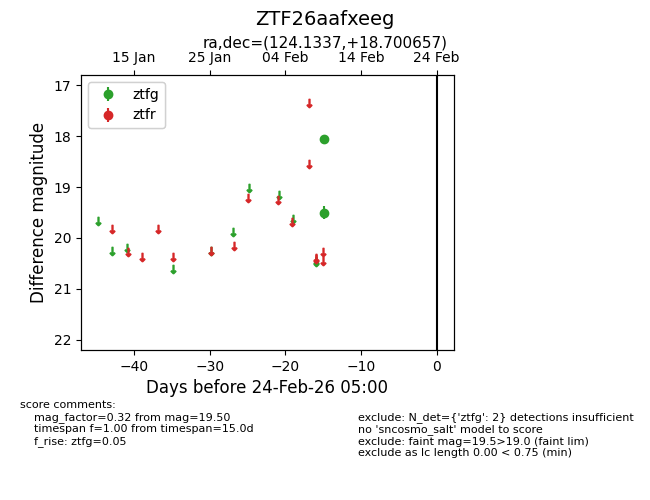
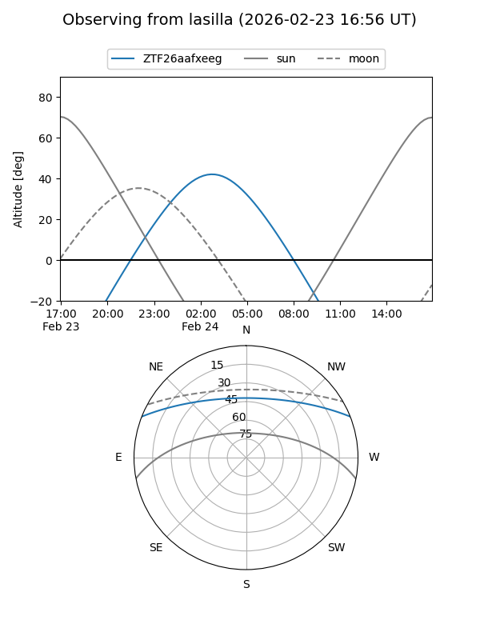
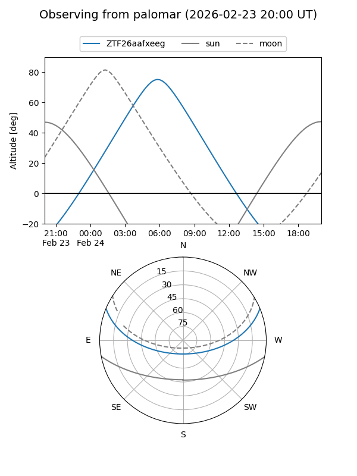

ZTF26aafxeeg
Target ZTF26aafxeeg at 2026-02-24 09:08
Aliases and brokers:
FINK: link
Lasair: link
ALeRCE: link
alt names
ZTF26aafxeeg (ztf,fink_ztf)
Coordinates:
equatorial (ra, dec) = 124.1337,+18.70066
equatorial (HMS+DMS) = 08:16:32.09,+18:42:02.37
galactic (l, b) = (204.6399,+26.87641)
Flags:
Photometry:
last ztfg=19.50
2 ztfg detections
Lightcurve

Visibility


Additional plots